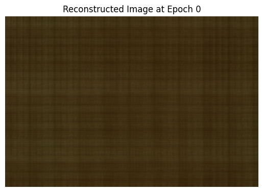
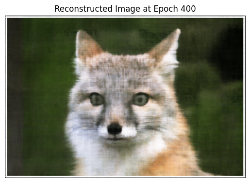
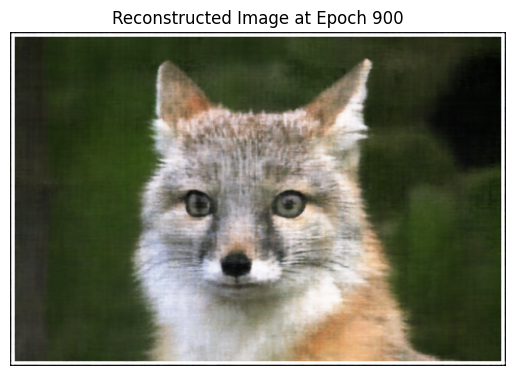
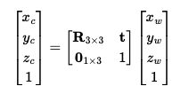
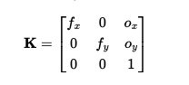
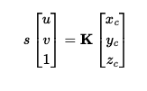
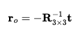
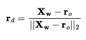
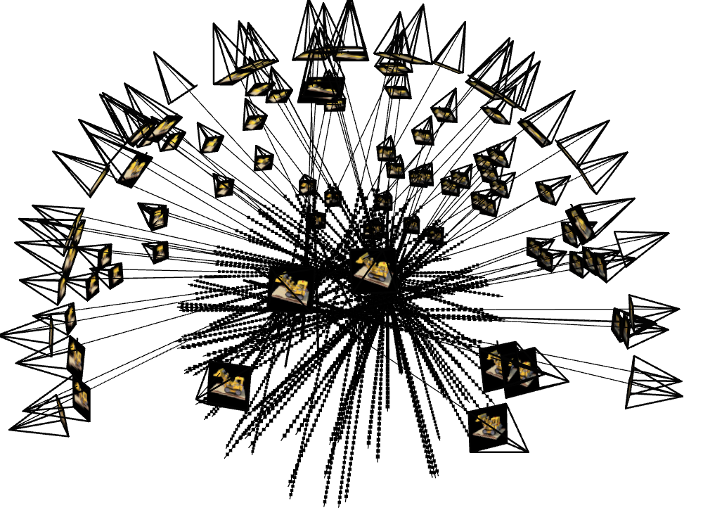

A neural radiance field (NeRF) is a neural network that can reconstruct complex three-dimensional
scenes from a partial set of two-dimensional images.
The NeRF learns the scene geometry, objects, and angles of a particular scene. Then it renders
photorealistic 3D views from novel viewpoints, automatically generating synthetic data to fill in
gaps.
In this project we implement NeRF from scratch.
Part 1: Fit a Neural Field to a 2D Image
This section focuses on implementing a Neural Field to map 2D pixel
coordinates to RGB pixel values using a Multilayer Perceptron (MLP)
with sinusoidal positional encoding.
The MLP learns to reconstruct the target 2D image by predicting pixel colors based on sampled input
coordinates. To achieve this, we:
Implemented a sinusoidal positional encoding layer to enhance
input representation.
Built a dataloader to randomly sample pixel coordinates and colors for efficient training.
Trained the network using mean squared error (MSE) loss and
evaluated quality with Peak Signal-to-Noise Ratio (PSNR).
Experimented with hyperparameters like the number of layers, hidden units, and learning rate to
optimize performance.
Through this process, we gained a deeper understanding of neural fields and their ability to fit and
reconstruct 2D data.
Fox
Below are the hyperparameters used for training:
Hidden Layers: __
Highest Frequency (L): __
Hidden Neurons per Layer: __
Learning Rate: __
Batch Size: __
Epochs: __

Fox Iteration: 0Fox Iteration: 200

Fox Iteration: 400Fox Iteration: 600

Fox Iteration: 1000Original Fox
For the cat images we also tried to two separate sets of Hyperameter configurations.
We tried using double the Layers for one setup and then lowered the learning rate to .0002 for the
other setup.
Both sets of results are below:
In this section, we implemented several functions to compute and transform rays from camera
parameters. These functions enable us to move between world, camera, and pixel coordinate systems,
which are essential for ray tracing and rendering. The key steps and functions implemented are:
Camera-to-World Transformation:
We implemented the function transform(c2w, x_c) to transform 3D points from
camera coordinates to world coordinates using the camera's extrinsic matrix. The inverse
transformation, transform(c2w.inv(), x_w), converts points from world
coordinates back to camera coordinates.

Camera to World
Pixel-to-Camera Conversion:
The function pixel_to_camera(K, uv, s) converts 2D pixel coordinates into
3D camera coordinates by leveraging the camera's intrinsic matrix K. This
includes calculating depth s = z_c along the optical axis.

Intrinsic Matrix

Camera to Pixel
Pixel-to-Ray Conversion:
We implemented pixel_to_ray(K, c2w, uv), which generates rays for each
pixel. This function computes the ray's origin (r_o) and direction
(r_d) in the world coordinate system, normalizing r_d to
ensure unit vectors.

Orgin Ray

Ray Direction
By implementing these functions, we can efficiently generate and handle rays for rendering tasks.
Part 2.2: Sampling
In this section, we implemented sampling methods to generate rays and points for rendering. These
samples form the foundation for training NeRF models and are critical for capturing the 3D structure
of scenes. The key steps and functions implemented are:
Sampling Rays from Images:
We extended the ray sampling process to handle multiple images, leveraging camera
intrinsics and extrinsics to compute ray origins and directions.
We implemented sampling by
Option 1: Sample M images, then sample
N / M rays from each image.
Option 2: Flatten all pixels across images and perform a global
sampling of N rays.
To align ray sampling with the pixel grid, we adjusted UV coordinates to account for the
pixel center offset (adding 0.5).
Sampling Points along Rays:
We discretized each ray into samples along its path in 3D space using the function
np.linspace(near, far, n_samples).
To avoid overfitting, we added random perturbations to the sampled points:
t = t + (np.random.rand(t.shape) * t_width)
The batched samples along each ray are calculated using rays_o + rays_d * t
By implementing these sampling techniques, we ensure that the ray and point distributions provide
sufficient coverage of the 3D space, enabling effective training for the NeRF model.
2.3: Putting the Dataloading All Together
In this section, we implemented a dataloader that takes in a list of images and a list of cameras and
outputs a batch of rays and colors.
As a sanity check we also plotted our data using the vizualization code. The visualization is below:

Dataset Visualization
2.4: Neural Radiance Field
In this section, we extended the MLP from Part 1 to create a Neural Radiance Field (NeRF) that
predicts both density and color for 3D samples. The network was modified to handle 3D inputs and
view-dependent outputs. The key steps and modifications include:
Input Representation:
Inputs are now 3D world coordinates ([x, y, z]) and 3D ray directions
([dx, dy, dz]), instead of 2D pixel coordinates.
The ray direction is encoded using positional encoding (PE), but with fewer frequencies
L=4 compared to coordinate PE (L=10).
Output Prediction:
The network predicts both density and RGB color values
for each 3D sample point.
Density: Constrained to be positive using ReLU.
Color: Constrained to range [0, 1] using Sigmoid.
Color depends on both the point location and view direction.
Network Architecture: Our new network roughly follows the diagram below
MLP Visualization
Part 2.5: Volume Rendering
In this section, we implemented the volume rendering equation to compute the color of a ray as it
passes through 3D space. This process uses densities and colors predicted by the NeRF and combines
them along a ray. The key steps include:
Volume Rendering Equation:
The continuous volume rendering equation integrates the color contributions along a ray,
weighted by transmittance and density:
C(r) = ∫tntf T(t)σ(r(t))c(r(t), d)dt, where
T(t) = exp(-∫tntσ(r(s))ds)
We implemented the discrete approximation for computation:
Ĉ(r) = Σi=1N Ti (1 -
exp(-σiδi))ci, where Ti =
exp(-Σj=1i-1 σjδj)
Verification:
A test case was implemented to ensure the volume rendering outputs match expected
results using a provided assert statement.
This implementation ensures that the rendered colors accurately represent the cumulative
contributions of densities and colors along each ray, forming the basis for synthesizing images with
NeRF.